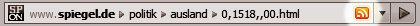

Schrift:


Immer die neueste Meldung auf dem Schirm, sekundenaktuell und übersichtlich: Mit dem RSS-Angebot von SPIEGEL ONLINE entgeht Ihnen keine wichtige Meldung mehr, selbst wenn Sie keinen Internet-Browser geöffnet haben. Sie können unsere Nachrichten-Feeds ganz einfach abonnieren - unkompliziert und kostenlos.
Verpassen Sie keine Nachricht - bleiben Sie immer auf dem Laufenden: Das RSS-Angebot von SPIEGEL ONLINE benachrichtigt Sie, sobald eine neue Meldung veröffentlicht wird. Unkomplizierte RSS-Hilfsprogramme informieren Sie sekundenaktuell über Neuheiten in Ressorts, die Sie besonders interessieren, und geben Ihnen rasch den Überblick über das Tagesgeschehen.

Vista-Gadget, RSS, Newsreader: Immer informiert mit SPIEGEL ONLINE
RSS-Feeds - so einfach funktioniert's: Ein RSS-Feed ist nichts anderes als ein Nachrichten-Direktkanal von SPIEGEL ONLINE zu Ihnen. Immer wenn wir einen Artikel veröffentlichen, bekommen Sie eine Meldung, selbst wenn Sie gerade keinen Internet-Browser geöffnet haben. So werden Ihnen wie bei einem Abo alle SPIEGEL-ONLINE-Artikel aus Ihren Favoriten-Ressorts zugestellt, sofort nach Veröffentlichung. Sie haben viele verschiedene Möglichkeiten, die RSS-Feeds zu abonnieren - und Sie müssen dafür gar keinen großen Aufwand treiben:
Falls Sie schon RSS-Feeds nutzen und einen RSS-Reader haben, prüfen Sie zunächst, ob Ihr Internet-Browser in der Adresszeile eines SPIEGEL-ONLINE-Artikels das orangefarbene RSS-Symbol anzeigt (oder den Schriftzug "RSS"):

Klicken Sie darauf. Schon bietet der Browser Ihnen in der Regel an, den zum Artikel passenden SPIEGEL-ONLINE-Nachrichtenfeed zu Ihren RSS-Abonnements hinzuzufügen. Wenn in der Browser-Adresszeile kein RSS-Symbol erscheint, hilft Ihnen die folgende Übersicht aller SPIEGEL-ONLINE-Feeds. Klicken Sie einfach auf die Zeile eines Feeds, der Sie besonders interessiert, und schon wird er zum Abonnieren aufgerufen:
Falls Sie ein RSS-Neuling sind oder ein ganz auf SPIEGEL ONLINE zugeschnittenes Nachrichtentool suchen, mit dem Sie nie wieder eine Nachricht verpassen - dann sind die besten Varianten für Sie das Vista-Gadget, der Newsreader oder die Sidebar von SPIEGEL ONLINE. Mit diesen praktischen, für die Bedürfnisse von SPIEGEL-ONLINE-Lesern konzipierten Hilfsprogrammen können Sie unkompliziert und ohne großen Installationsaufwand unsere RSS-Feeds nutzen. Die Einrichtung dauert nur ein paar Minuten - aber sehen Sie selbst:


Oder wollen Sie unsere RSS-Feeds lieber über andere Programme abonnieren? SPIEGEL ONLINE ermöglicht Ihnen natürlich auch die Nutzung der Nachrichtenfeeds über die vielen frei verfügbaren Hilfsprogramme, Browser-Erweiterungen und Internet-Dienste. Diese sind besonders dann sinnvoll, wenn Sie neben den SPIEGEL-ONLINE-Feeds andere RSS-Feeds abonnieren wollen. Im Netz finden Sie eine große Vielfalt an Tools - hier eine Orientierungshilfe:
 Viele Internet-Browser und Mailprogramme können neben
ihrer eigentlichen Aufgabe, dem Anzeigen von Webseiten und dem Verschicken von
E-Mails, auch RSS-Feeds verwalten und anzeigen. Sie müssen dafür nur in diesen
Programmen die Feeds abonnieren, sonst nichts organisieren - alles passiert in
einem einzigen Programm: Das ist der große Vorteil dieser
Variante.
Viele Internet-Browser und Mailprogramme können neben
ihrer eigentlichen Aufgabe, dem Anzeigen von Webseiten und dem Verschicken von
E-Mails, auch RSS-Feeds verwalten und anzeigen. Sie müssen dafür nur in diesen
Programmen die Feeds abonnieren, sonst nichts organisieren - alles passiert in
einem einzigen Programm: Das ist der große Vorteil dieser
Variante.Diskutieren Sie mit anderen SPIEGEL-ONLINE-Lesern!
© SPIEGEL ONLINE 2005
Alle Rechte vorbehalten
Vervielfältigung nur mit
Genehmigung der SPIEGELnet GmbH